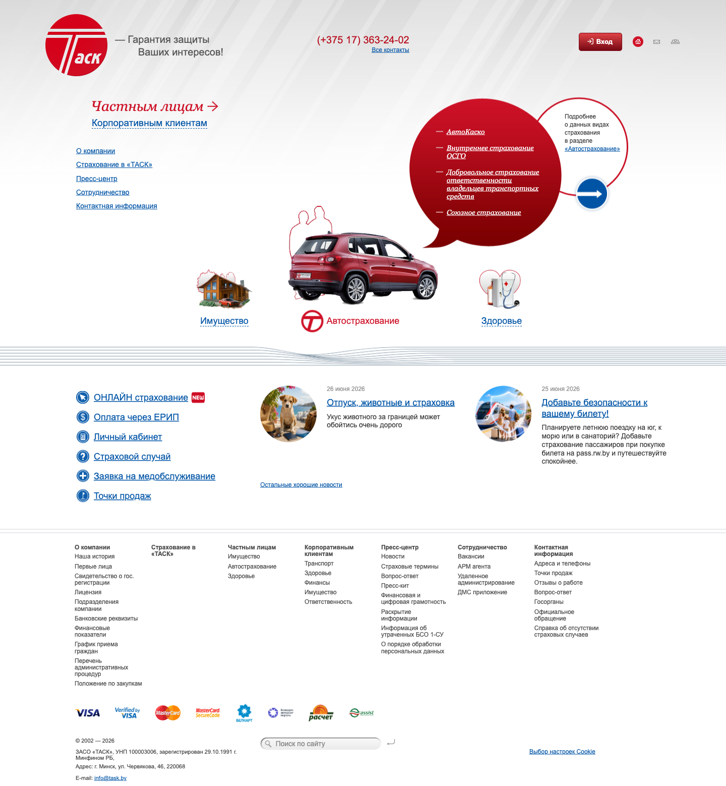
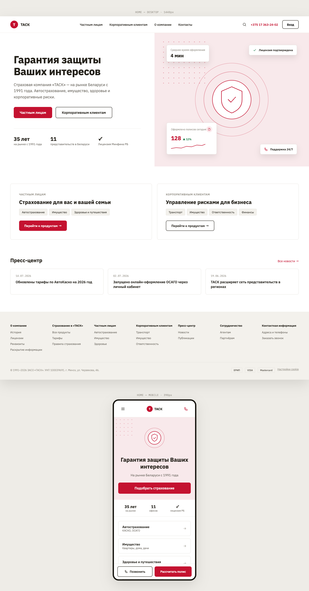
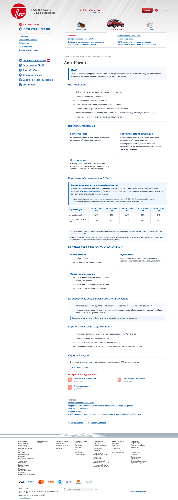
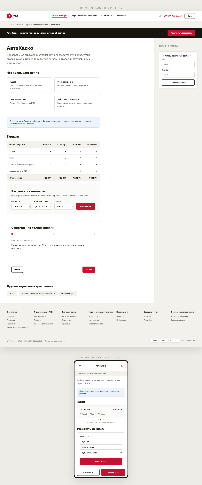
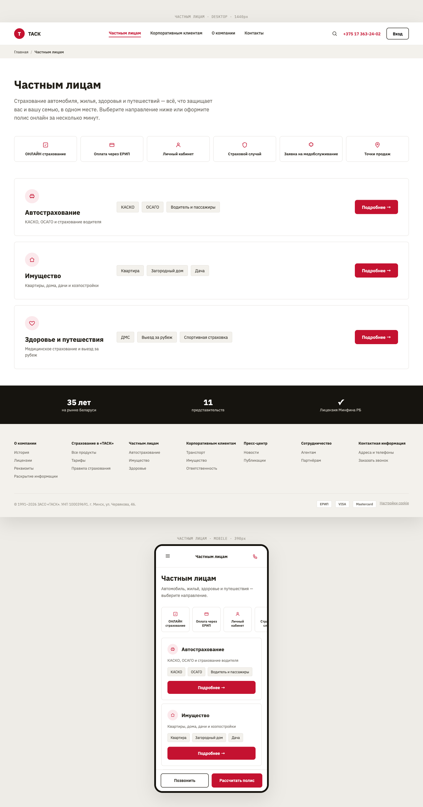
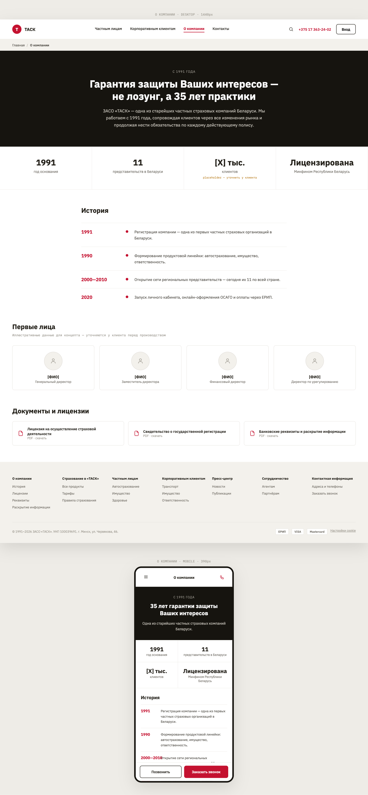
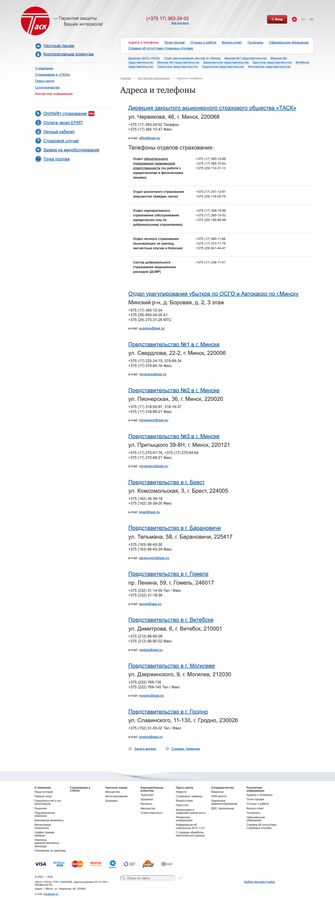
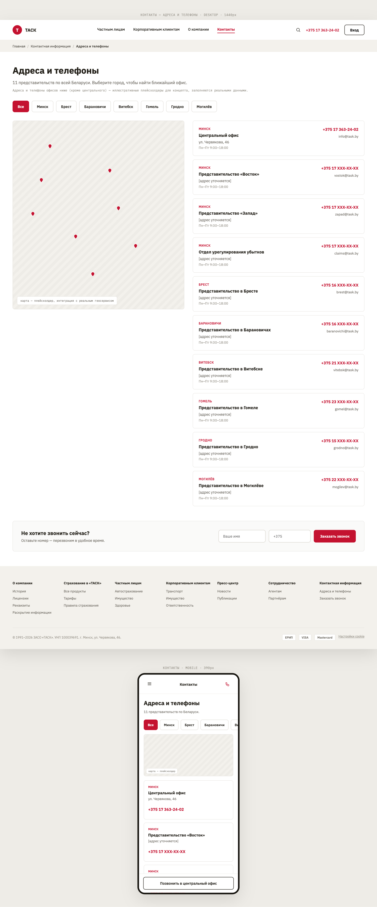

1. Главная страница
Первое впечатлениеУбрана клипарт-иллюстрация без единой кнопки действия — вместо неё композиция с понятным заголовком и кнопкой сразу для двух аудиторий («Частным лицам» / «Корпоративным клиентам»). Для мобильной версии — отдельный, а не сжатый экран: заголовок, одна кнопка, компактный визуал и кнопка звонка.


2. Продукт — АвтоКаско
Самая важная для продаж страницаДобавлены калькулятор стоимости и кнопка оформления — по образцу страницы ОСАГО, где такая кнопка уже работает. На телефоне таблица тарифов больше не обрезается: она превращается в карточки, которые удобно листать.


3. Раздел «Частным лицам»
Сейчас у раздела нет своей страницыПункт меню «Частным лицам» сегодня незаметно ведёт на страницу «Имущество» — у самого популярного раздела меню нет собственной страницы. Ниже — как может выглядеть его настоящая landing-страница, без изменения самого дерева разделов.


4. О компании
Страница доверияВместо одного экрана юридических реквизитов — история компании (с 1991 года), цифры, фото руководства (уже существующее на сайте, но никак не показанное здесь), и лицензии — с сохранением всех обязательных документов.


5. Контакты — адреса и телефоны
Страница с самым высоким намерением к действию11 представительств вместо сплошного текста — карточки с фильтром по городу и картой, все номера телефонов кликабельны (сейчас — ни одного кликабельного номера на всём сайте).

